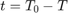
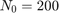
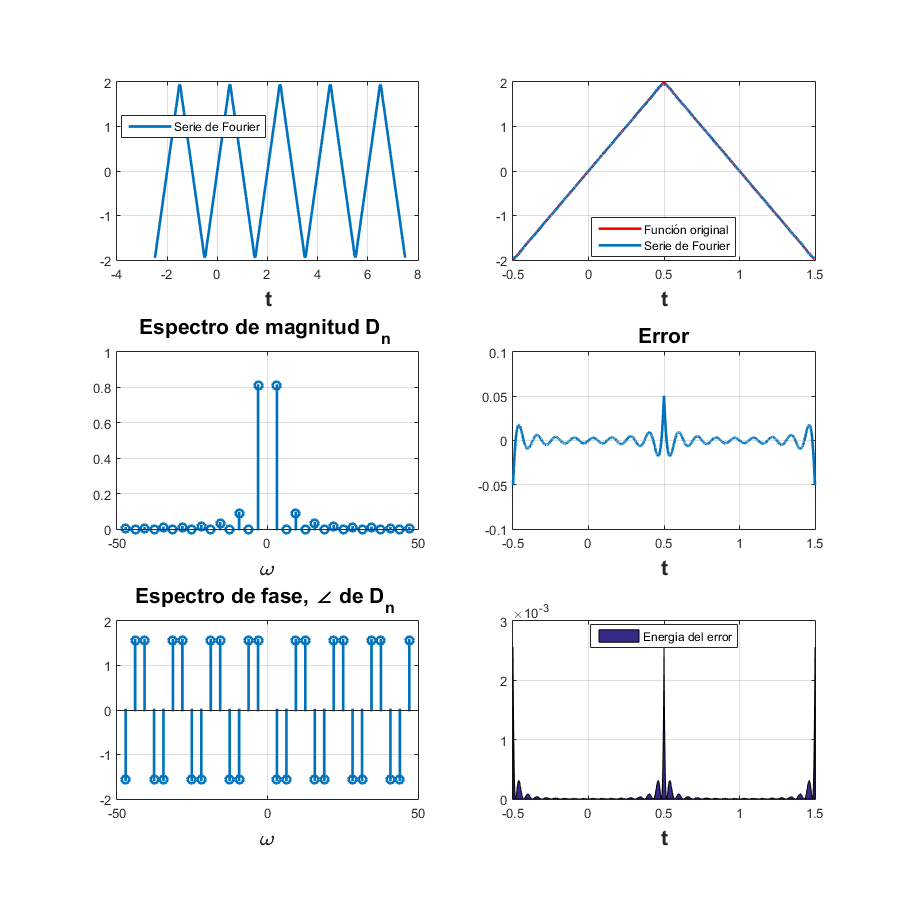

Práctica 5:Series de Fourier en tiempo continuo
Contents
- Integrantes del equipo
- Alarcon Camacho Aldo yosef
- Monroy Reza Rene
- Ochoa Velasquez José Abraham
Objetivos
- Realizar gráficas de series de Fourier exponenciales y trigonométricas en tiempo continuo
- Manipulación de instrucciones en MATLAB
- Calculo númerico de los coeficientes de Fourier
Introducción
- Aproximación númerica de los coeficientes de Fourier exponencial compleja
Podemos calcular numéricamente usando el DFT (la transformada discreta de Fourier), que usa las muestras de una señal periódica durante un período. El intervalo de muestreo es segundos. Por lo tanto, hay número de muestras en un período . Para encontrar la relación entre y las muestras de , considere la ecuación. (6.29b)

donde es la k-ésima muestra de y

En la práctica, es imposible hacer que al calcular el lado derecho de la ecuación. (6.96). Podemos hacer que sea pequeño, pero no cero, lo que hacer que los datos aumenten sin límite. Por lo tanto, ignoraremos el límite de en la ecuación. (6.96) con la comprensión implícita de que es razonablemente pequeño. distinto de cero dará como resultado algún error computacional, que es inevitable en cualquier evaluación numérica de una integral. El error resultante de distinto de cero se denomina error de solapamiento. Por lo tanto, podemos expresar la ecuación. (6.96) como:

Ahora, de la ecuación.(6.97), . Por lo tanto, y de la ecuación. (6.98a), se deduce que:

La propiedad de periodicidad significa que más allá de , los coeficientes representan los valores para negativo. Por ejemplo, cuando  . El ciclo se repite nuevamente desde en adelante. Podemos usar la eficiente FFT (la transformada rápida de Fourier) para calcular el lado derecho de la ecuación. (6.98b). Nosotros utilizaremos MATLAB para implementar el algoritmo FFT. Para este propósito, necesitamos muestras de durante un período que comience en . En este algoritmo, también es preferible (aunque no necesario) que sea una potencia de 2, es decir , donde es un número entero.
. El ciclo se repite nuevamente desde en adelante. Podemos usar la eficiente FFT (la transformada rápida de Fourier) para calcular el lado derecho de la ecuación. (6.98b). Nosotros utilizaremos MATLAB para implementar el algoritmo FFT. Para este propósito, necesitamos muestras de durante un período que comience en . En este algoritmo, también es preferible (aunque no necesario) que sea una potencia de 2, es decir , donde es un número entero.
- Ejemplo 6.1
Encuentre la serie de Fourier trigonométrica compacta para la señal periódica que se muestra en la figura 6.2a. Dibuja los espectros de amplitud y fase para .
Las muestras de comienzan en y la última muestra está en . En los puntos de discontinuidad, el valor de la muestra se toma como el promedio de los valores de la función en ambos lados de la discontinuidad. Por lo tanto, la muestra en %t=0% no es 1 sino %\frac{e^{? ? / 2} + 1}{2} = 0.6044. Para determinar , requerimos que para sea insignificante. Debido a que x(t) tiene una discontinuidad de salto, decae bastante lentamente a medida que . Por lo tanto, una elección de  es aceptable porque el armónico es aproximadamente el 1% del fundamental. Sin embargo, tambien requerimos que sea una potencia de 2. Por lo tanto, tomaremos .
- Primero, se establecen los parámetros básicos.
T_0 = pi; N_0 = 256; T = T_0/N_0; t = (0:T:T*(N_0-1))'; M = 10; x = exp(-t/2); x(1) = (exp(-pi/2) + 1)/2;
A continuación, el DFT, calculado mediante la función fft, se usa para aproximar los espectros de Fourier exponenciales sobre -M<=n<=M.
D_n = fft (x)/N_0; n = [-N_0/2:N_0/2-1]';
clf; subplot (2, 2, 1); stem(n, abs(fftshift (D_n)),'k');
axis ([-M M -.1 .6]); xlabel('n'); ylabel('|D_n|');
subplot (2, 2, 2); stem(n, angle(fftshift(D_n)),'k');
axis([-M M -pi pi]); xlabel ('n'); ylabel('\angle D n [rad]');- Los espectros trigonométricos aproximados de Fourier sobre 0<=n<=M siguen inmediatamente.
%n = [0:M]; C_n(1) = abs(D_n(1)); C_n(2:M+1) = 2*abs (D_n(2:M+1));
theta_n(1) = angle(D_n(1)); theta_n(2:M+1) = angle(D_n(2:M+1));
subplot (2, 2, 3); stem(n,C_n,'k');
xlabel ('n'); ylabel('C_n');
subplot (2, 2, 4); stem(n,theta_n,'k');
xlabel ('n'); ylabel('\theta n [rad]');Lo que resulta:
Ejemplo 6.1
* Graficas para 4 armonicos
dn=@(n) 0.504/(1+4*n*1j); f=@(t) exp(-t/2); sfc(0,pi,dn,0.504,f,4,-3*pi,3*pi)
* Graficas para 15 armonicos
dn=@(n) 0.504/(1+4*n*1j); f=@(t) exp(-t/2); sfc(0,pi,dn,0.504,f,15,-3*pi,3*pi)
Ejemplo 6.2
d0=0; A=2; dn=@(n)(2*A/((n.^2).*((pi)^2))).*-(exp((j*pi/2).*n)-exp((-j*pi/2).*n)); t0=-0.5; tf=1.5; f=@(t) (t>=-0.5 & t<0.5 ).* (4.*t)+((t>=0.5) & (t<=1.5)).*((-4.*t)+4); armo=4; a=-2.5; b=7.5; sfc(t0,tf,dn,d0,f,armo,a,b)
15 armonicos
armo=15; sfc(t0,tf,dn,d0,f,armo,a,b)
Ejemplo 6.4
d0=0.5; dn=@(n)(1./((2*j*pi).*n)).*(exp((j*pi/2).*n)-exp((-j*pi/2).*n)); t0=-pi; tf=pi; f=@(t)(t>=-pi/2 & t<=pi/2).* (t./t); armo=4; a=-5*(pi); b=5*(pi); sfc(t0,tf,dn,d0,f,armo,a,b)
15 armonicos
armo=15; sfc(t0,tf,dn,d0,f,armo,a,b)

Ejercicio 6.5
d1=0; d0=2/pi; dn=@(n) (1/(2*pi)).*((((exp(-(pi*j).*n) + 1).^2))./(-(n.^2)+1)); t0=0; tf=2*pi; f=@(t) (t<=2*pi).*abs(sin(t)); armo=4; a=-pi; b=4*pi; sfc1(t0,tf,dn,d1,d0,f,armo,a,b)
15 armonicos
armo=15; sfc1(t0,tf,dn,d1,d0,f,armo,a,b)
Ejemplo 6.7
d1=0; d0=2/pi; dn=@(n) 1/3; t0=-3; tf=3; armo=4; a=-15; b=15; sfc2(t0,tf,dn,d1,d0,armo,a,b)
15 armonicos
armo=15; sfc2(t0,tf,dn,d1,d0,armo,a,b)
Ejercicio 6
f=@(t) ((6*t).*(heaviside(t+0.5)-heaviside(t-0.5)))+((6-6*t).*(heaviside(t-0.5)-heaviside(t-1.5))) ; t=-4:0.001:6; sumterms=zeros(15,length(t)); for n=1:size(sumterms) sumterms(n+1,:)=(24/(n*pi)^2)*sin(pi*n*t); end fN = cumsum(sumterms); figure(1); clf; ind=0; for N=[0,1:2:size(sumterms,1)-1] ind=ind+1; subplot(3,3,ind) plot(t,fN(N+1,:),'k') grid on hold on plot(t,f(t),'--r') axis([-4 6 -4 4]) xlabel ('t') ylabel (['f{',num2str(N),'} (t)']); end
Ejercicio 7
Funcion del Trapecio Compuesto
function trapcom=in(f,a,b,n) h=(b-a)/n; f0=f(a); fn=f(b); fs=0; for i=1:n-1 x(i)=a+(i*h); fs=fs+f(x(i)); end trapcom=(h/2)*(f0+2*fs+fn)
%Codigo de Lathi f=@(t)exp(-t./2).*(heaviside(t)-heaviside(t-pi)); T_0 = pi; N_0 = 256; T = T_0/N_0; t=(0:T:T*(N_0-1)); D_n =@(t) fft(exp(-t./2))./N_0; S=(D_n(t)); D_0=S(1,1); D_1=S(1,2); D_2=S(1,3); D_3=S(1,4); D_4=S(1,5); n = [-N_0/2:N_0/2-1]; %Integracion numerica por trapecio Compuesto syms n1 f1=@(t)exp(-t./2).*exp(-j.*n1.*2.*t); Dn(n1)=(1/T_0).*trapcom(f1,0,pi,10); D0=double(Dn(0)); D1=double(Dn(1)); D2=double(Dn(2)); D3=double(Dn(3)); D4=double(Dn(4)); %Resultado del metodo analitico dn=@(n) 0.504/(1+4*n*j); d0=dn(0); d1=dn(1); d2=dn(2); d3=dn(3); d4=dn(4); % Comparando Resultados Lathi=[D_0;D_1;D_2;D_3;D_4]; TrapC=[D0;D1;D2;D3;D4]; Analitico=[d0;d1;d2;d3;d4]; Error_TrapC=Analitico-TrapC; Error_Lathi=Analitico-Lathi; DN=[0;1;2;3;4]; table(DN,Lathi,TrapC,Analitico,Error_Lathi,Error_TrapC)
trapcom =
(pi*((8213451129243769*exp(-pi*n1*1i))/9007199254740992 + (234051595647807*exp(-pi*n1*2i))/1125899906842624 + (7697876734647827*exp(-(pi*n1*1i)/5))/4503599627370496 + (102795040226159*exp(-(pi*n1*2i)/5))/70368744177664 + (2811274941173767*exp(-(pi*n1*3i)/5))/2251799813685248 + (1201308384122245*exp(-(pi*n1*4i)/5))/1125899906842624 + (3509755506168751*exp(-(pi*n1*6i)/5))/4503599627370496 + (2999563403798093*exp(-(pi*n1*7i)/5))/4503599627370496 + (2563534866628457*exp(-(pi*n1*8i)/5))/4503599627370496 + (4381778364210325*exp(-(pi*n1*9i)/5))/9007199254740992 + 1))/20
ans =
DN Lathi TrapC Analitico Error_Lathi Error_TrapC
__ ___________________ ___________________ ___________________ ______________________ _____________________
0 0.50583+0i 0.50532+0i 0.504+0i -0.0018282+0i -0.001316+0i
1 0.031212-0.11865i 0.030721-0.11448i 0.029647-0.11859i -0.0015651+5.9442e-05i -0.0010737-0.004104i
2 0.0093068-0.062053i 0.0088817-0.053555i 0.0077538-0.062031i -0.001553+2.1745e-05i -0.0011279-0.0084759i
3 0.0050265-0.041714i 0.0047276-0.028506i 0.0034759-0.04171i -0.0015506+4.1454e-06i -0.0012517-0.013204i
4 0.0035109-0.03137i 0.0034298-0.012781i 0.0019611-0.031377i -0.0015498-7.9163e-06i -0.0014687-0.018596i
Conclusiones
Para calcular el valor de Dn de la Serie de Fourier de la función que se muestra en el ejemplo (), se pueden emplear diferentes metodo, en esta practica se usaron tres, el primero de ellos fue el codigo propuesto en el Ejemplo C6.4 del libro de Lathi, el segundo metodo fue una aproximación mediaante integración numerica por el metodo del trapecio compuesto, y el tercer metodo fue la evaluacion del resultado obtenido en el metodo analitico. Observando la tabla de resultados podemos ver que el metodo del trapecio compuesto con 10 intervalos tiene un error menor que el metodo propuesto por Lathi.
Referencias
- Cleve Moler. (2004). The Origins of MATLAB. 2019, de MathWorks Sitio web: https://www.mathworks.com/company/newsletters/articles/the-origins-of-matlab.html
- B. P. Lathi, Linear systems and signals,Oxford University Press